Exponential and Logarithmic Equations
Learning Objectives
- Solve Exponential Equations. (IA 10.2.2)
- Solve Logarithmic Equations. (IA 10.3.4)
Objective 1: Solve Exponential Equations. (IA 10.2.2)
Equations that include an exponential expression are called exponential equations. There are two types of exponential equations: those with the common base on each side, and those without a common base.
Type 1: Possible common base on each side: Use properties of exponents to rewrite each side with a common base. Use base-exponent property to set exponents equal to each other and solve for x.
Type 2: No possible common base: Use properties of exponents to rewrite each side in terms of one exponential expression. Take the log or ln of each side and use the power rule to bring down the power. Solve the remaining equation for x.
Solving Exponential Equations.
Solve:
Solution
| Is here a common base? | Yes, both 3 and 27 can be rewritten as powers of 3. |
| Write both sides of the equation with the same base. | |
| Since the bases are the same, the exponents must be equal. | |
| Write a new equation by setting the exponents equal. | |
| Solve the equation. | |
| Check the solution by substituting x=4 into the original equation. | |
| True |
Solve . Find the exact answer and then approximate it to three decimal places.
Solution
| Rewriting with a common base is not possible. | |
| Isolate the exponential by dividing both sides by 3. | |
| Take the natural logarithm of both sides. | |
| Use the Power Property to get the x as a factor, not an exponent. | |
| Use the property to simplify. | |
| Solve the equation. Find the exact answer. | |
| Approximate the answer. |
Practice Makes Perfect
Solve. Find the exact answer and then approximate it to three decimal places.
Objective 2: Solving Logarithmic Equations. (IA 10.3.4)
There are two types of logarithmic equations: those with log terms on just one side of the equation or those with log terms on each side of the equation. Since the domain of logarithmic functions is positive numbers only, make sure to check the solutions.
Type 1: Log terms on one side of the equation: Use properties of logs to rewrite a side with just one log term. Convert to exponential notation and solve for x.
If then .
Type 2: Log terms on both sides of equation: First, use log properties to rewrite each side in terms of a single log expression, if necessary. Use the one-to-one property of logarithmic equality to set arguments equal to one another. Solve the resulting equation for x.
Solving logarithmic equations.
Solve:
Solution
| Rewrite in exponential form. | |
| Simplify. | |
| Solve for x. | |
| Check. | |
| , True |
Solve
Solution
| Use the Quotient Property on the left side and the Power Property on the right. | |
| Rewrite as . | |
| Use the One-to-One Property. | |
| Solve the rational equation. | |
| Distribute and write in standard form. | |
| Factor and solve for x. | , , |
| Check: | x=–5 is extraneous solution because so x=1 is the only solution. |
Practice Makes Perfect
Don’t forget to check your solutions.
In 1859, an Australian landowner named Thomas Austin released 24 rabbits into the wild for hunting. Because Australia had few predators and ample food, the rabbit population exploded. In fewer than ten years, the rabbit population numbered in the millions.
Uncontrolled population growth, as in the wild rabbits in Australia, can be modeled with exponential functions. Equations resulting from those exponential functions can be solved to analyze and make predictions about exponential growth. In this section, we will learn techniques for solving exponential functions.
Using Like Bases to Solve Exponential Equations
The first technique involves two functions with like bases. Recall that the one-to-one property of exponential functions tells us that, for any real numbers and where if and only if
In other words, when an exponential equation has the same base on each side, the exponents must be equal. This also applies when the exponents are algebraic expressions. Therefore, we can solve many exponential equations by using the rules of exponents to rewrite each side as a power with the same base. Then, we use the fact that exponential functions are one-to-one to set the exponents equal to one another, and solve for the unknown.
For example, consider the equation To solve for we use the division property of exponents to rewrite the right side so that both sides have the common base, Then we apply the one-to-one property of exponents by setting the exponents equal to one another and solving for :
Solving an Exponential Equation with a Common Base
Solve
Solution
Rewriting Equations So All Powers Have the Same Base
Sometimes the common base for an exponential equation is not explicitly shown. In these cases, we simply rewrite the terms in the equation as powers with a common base, and solve using the one-to-one property.
For example, consider the equation We can rewrite both sides of this equation as a power of Then we apply the rules of exponents, along with the one-to-one property, to solve for
Solving Equations by Rewriting Them to Have a Common Base
Solve
Solution
Solving Equations by Rewriting Roots with Fractional Exponents to Have a Common Base
Solve
Solution
Solving an Equation with Positive and Negative Powers
Solve
Solution
This equation has no solution. There is no real value of that will make the equation a true statement because any power of a positive number is positive.
Solving Exponential Equations Using Logarithms
Sometimes the terms of an exponential equation cannot be rewritten with a common base. In these cases, we solve by taking the logarithm of each side. Recall, since is equivalent to we may apply logarithms with the same base on both sides of an exponential equation.
Solving an Equation Containing Powers of Different Bases
Solve
Solution
Equations Containing e
One common type of exponential equations are those with base This constant occurs again and again in nature, in mathematics, in science, in engineering, and in finance. When we have an equation with a base on either side, we can use the natural logarithm to solve it.
Solve an Equation of the Form y = Aekt
Solve
Solution
Analysis
Using laws of logs, we can also write this answer in the form If we want a decimal approximation of the answer, we use a calculator.
Solving an Equation That Can Be Simplified to the Form y = Aekt
Solve
Solution
Extraneous Solutions
Sometimes the methods used to solve an equation introduce an extraneous solution, which is a solution that is correct algebraically but does not satisfy the conditions of the original equation. One such situation arises in solving when the logarithm is taken on both sides of the equation. In such cases, remember that the argument of the logarithm must be positive. If the number we are evaluating in a logarithm function is negative, there is no output.
Solving Exponential Functions in Quadratic Form
Solve
Solution
Analysis
When we plan to use factoring to solve a problem, we always get zero on one side of the equation, because zero has the unique property that when a product is zero, one or both of the factors must be zero. We reject the equation because a positive number never equals a negative number. The solution is not a real number, and in the real number system this solution is rejected as an extraneous solution.
Using the Definition of a Logarithm to Solve Logarithmic Equations
We have already seen that every logarithmic equation is equivalent to the exponential equation We can use this fact, along with the rules of logarithms, to solve logarithmic equations where the argument is an algebraic expression.
For example, consider the equation To solve this equation, we can use rules of logarithms to rewrite the left side in compact form and then apply the definition of logs to solve for
Using Algebra to Solve a Logarithmic Equation
Solve
Solution
Using Algebra Before and After Using the Definition of the Natural Logarithm
Solve
Solution
Using a Graph to Understand the Solution to a Logarithmic Equation
Solve
Solution
Figure 3 represents the graph of the equation. On the graph, the x-coordinate of the point at which the two graphs intersect is close to 20. In other words A calculator gives a better approximation:
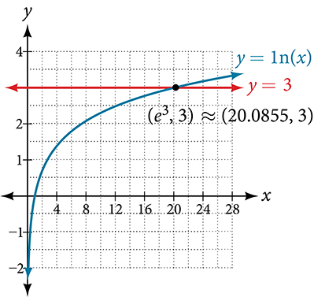
Using the One-to-One Property of Logarithms to Solve Logarithmic Equations
As with exponential equations, we can use the one-to-one property to solve logarithmic equations. The one-to-one property of logarithmic functions tells us that, for any real numbers and any positive real number where
For example,
So, if then we can solve for and we get To check, we can substitute into the original equation: In other words, when a logarithmic equation has the same base on each side, the arguments must be equal. This also applies when the arguments are algebraic expressions. Therefore, when given an equation with logs of the same base on each side, we can use rules of logarithms to rewrite each side as a single logarithm. Then we use the fact that logarithmic functions are one-to-one to set the arguments equal to one another and solve for the unknown.
For example, consider the equation To solve this equation, we can use the rules of logarithms to rewrite the left side as a single logarithm, and then apply the one-to-one property to solve for
To check the result, substitute into
Solving an Equation Using the One-to-One Property of Logarithms
Solve
Solution
Analysis
There are two solutions: or The solution is negative, but it checks when substituted into the original equation because the argument of the logarithm functions is still positive.
Solving Applied Problems Using Exponential and Logarithmic Equations
In previous sections, we learned the properties and rules for both exponential and logarithmic functions. We have seen that any exponential function can be written as a logarithmic function and vice versa. We have used exponents to solve logarithmic equations and logarithms to solve exponential equations. We are now ready to combine our skills to solve equations that model real-world situations, whether the unknown is in an exponent or in the argument of a logarithm.
One such application is in science, in calculating the time it takes for half of the unstable material in a sample of a radioactive substance to decay, called its half-life. Table 1 lists the half-life for several of the more common radioactive substances.
| Substance | Use | Half-life |
|---|---|---|
| gallium-67 | nuclear medicine | 80 hours |
| cobalt-60 | manufacturing | 5.3 years |
| technetium-99m | nuclear medicine | 6 hours |
| americium-241 | construction | 432 years |
| carbon-14 | archeological dating | 5,730 years |
| uranium-235 | atomic power | 703,800,000 years |
We can see how widely the half-lives for these substances vary. Knowing the half-life of a substance allows us to calculate the amount remaining after a specified time. We can use the formula for radioactive decay:
where
- is the amount initially present
- is the half-life of the substance
- is the time period over which the substance is studied
- is the amount of the substance present after time
Using the Formula for Radioactive Decay to Find the Quantity of a Substance
How long will it take for ten percent of a 1000-gram sample of uranium-235 to decay?
Solution
Analysis
Ten percent of 1000 grams is 100 grams. If 100 grams decay, the amount of uranium-235 remaining is 900 grams.
Key Equations
| One-to-one property for exponential functions | For any algebraic expressions and and any positive real number where if and only if |
| Definition of a logarithm | For any algebraic expression S and positive real numbers and where if and only if |
| One-to-one property for logarithmic functions | For any algebraic expressions S and T and any positive real number where if and only if |
Key Concepts
- We can solve many exponential equations by using the rules of exponents to rewrite each side as a power with the same base. Then we use the fact that exponential functions are one-to-one to set the exponents equal to one another and solve for the unknown.
- When we are given an exponential equation where the bases are explicitly shown as being equal, set the exponents equal to one another and solve for the unknown. See Example 5.
- When we are given an exponential equation where the bases are not explicitly shown as being equal, rewrite each side of the equation as powers of the same base, then set the exponents equal to one another and solve for the unknown. See Example 6, Example 7, and Example 8.
- When an exponential equation cannot be rewritten with a common base, solve by taking the logarithm of each side. See Example 9.
- We can solve exponential equations with base by applying the natural logarithm of both sides because exponential and logarithmic functions are inverses of each other. See Example 10 and Example 11.
- After solving an exponential equation, check each solution in the original equation to find and eliminate any extraneous solutions. See Example 12.
- When given an equation of the form where is an algebraic expression, we can use the definition of a logarithm to rewrite the equation as the equivalent exponential equation and solve for the unknown. See Example 13 and Example 14.
- We can also use graphing to solve equations with the form We graph both equations and on the same coordinate plane and identify the solution as the x-value of the intersecting point. See Example 15.
- When given an equation of the form where and are algebraic expressions, we can use the one-to-one property of logarithms to solve the equation for the unknown. See Example 16.
- Combining the skills learned in this and previous sections, we can solve equations that model real world situations, whether the unknown is in an exponent or in the argument of a logarithm. See Example 17.
Section Exercises
Verbal
How can an exponential equation be solved?
Solution
Determine first if the equation can be rewritten so that each side uses the same base. If so, the exponents can be set equal to each other. If the equation cannot be rewritten so that each side uses the same base, then apply the logarithm to each side and use properties of logarithms to solve.
When does an extraneous solution occur? How can an extraneous solution be recognized?
When can the one-to-one property of logarithms be used to solve an equation? When can it not be used?
Solution
The one-to-one property can be used if both sides of the equation can be rewritten as a single logarithm with the same base. If so, the arguments can be set equal to each other, and the resulting equation can be solved algebraically. The one-to-one property cannot be used when each side of the equation cannot be rewritten as a single logarithm with the same base.
Algebraic
For the following exercises, use like bases to solve the exponential equation.
Solution
Solution
Solution
For the following exercises, use logarithms to solve.
Solution
Solution
No solution
Solution
Solution
Solution
Solution
Solution
Solution
no solution
Solution
For the following exercises, use the definition of a logarithm to rewrite the equation as an exponential equation.
Solution
For the following exercises, use the definition of a logarithm to solve the equation.
Solution
Solution
Solution
For the following exercises, use the one-to-one property of logarithms to solve.
Solution
Solution
No solution
Solution
No solution
Solution
For the following exercises, solve each equation for
Solution
Solution
Solution
Graphical
For the following exercises, solve the equation for if there is a solution. Then graph both sides of the equation, and observe the point of intersection (if it exists) to verify the solution.
Solution
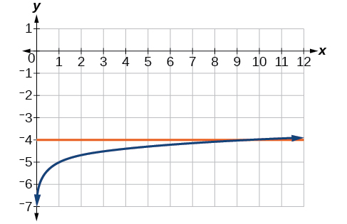
Solution
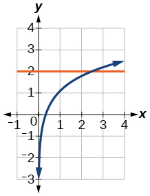
Solution
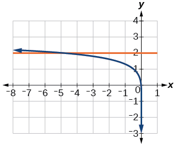
Solution
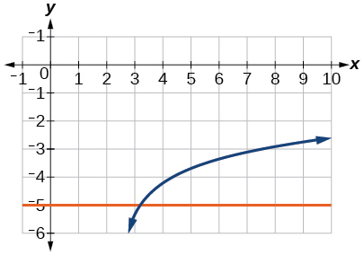
Solution
No solution
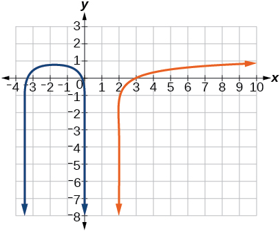
Solution
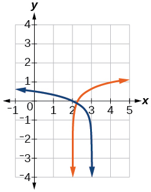
Solution
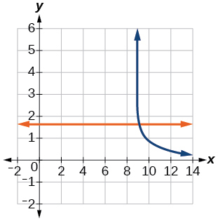
For the following exercises, solve for the indicated value, and graph the situation showing the solution point.
An account with an initial deposit of earns annual interest, compounded continuously. How much will the account be worth after 20 years?
Solution
about
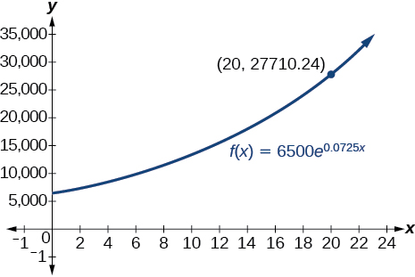
The formula for measuring sound intensity in decibels is defined by the equation where is the intensity of the sound in watts per square meter and is the lowest level of sound that the average person can hear. How many decibels are emitted from a jet plane with a sound intensity of watts per square meter?
The population of a small town is modeled by the equation where is measured in years. In approximately how many years will the town’s population reach
Solution
about 5 years
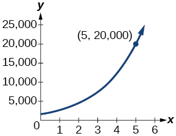
Technology
For the following exercises, solve each equation by rewriting the exponential expression using the indicated logarithm. Then use a calculator to approximate the variable to 3 decimal places.
using the common log.
using the natural log
Solution
using the common log
using the common log
Solution
using the natural log
For the following exercises, use a calculator to solve the equation. Unless indicated otherwise, round all answers to the nearest ten-thousandth.
Solution
Solution
Atmospheric pressure in pounds per square inch is represented by the formula where is the number of miles above sea level. To the nearest foot, how high is the peak of a mountain with an atmospheric pressure of pounds per square inch? (Hint: there are 5280 feet in a mile)
The magnitude M of an earthquake is represented by the equation where is the amount of energy released by the earthquake in joules and is the assigned minimal measure released by an earthquake. To the nearest hundredth, what would the magnitude be of an earthquake releasing joules of energy?
Solution
about
Extensions
Use the definition of a logarithm along with the one-to-one property of logarithms to prove that
Recall the formula for continually compounding interest, Use the definition of a logarithm along with properties of logarithms to solve the formula for time such that is equal to a single logarithm.
Solution
Recall the compound interest formula Use the definition of a logarithm along with properties of logarithms to solve the formula for time
Newton’s Law of Cooling states that the temperature of an object at any time t can be described by the equation where is the temperature of the surrounding environment, is the initial temperature of the object, and is the cooling rate. Use the definition of a logarithm along with properties of logarithms to solve the formula for time such that is equal to a single logarithm.
Solution
Analysis
Figure 2 shows that the two graphs do not cross so the left side is never equal to the right side. Thus the equation has no solution.
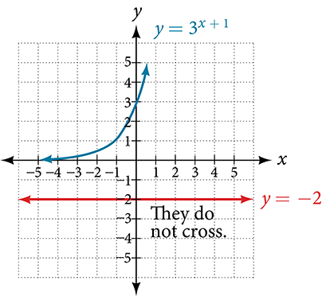